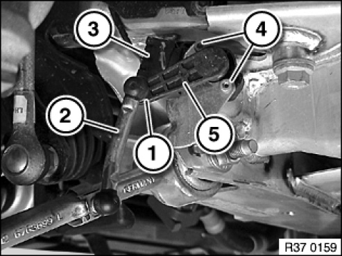
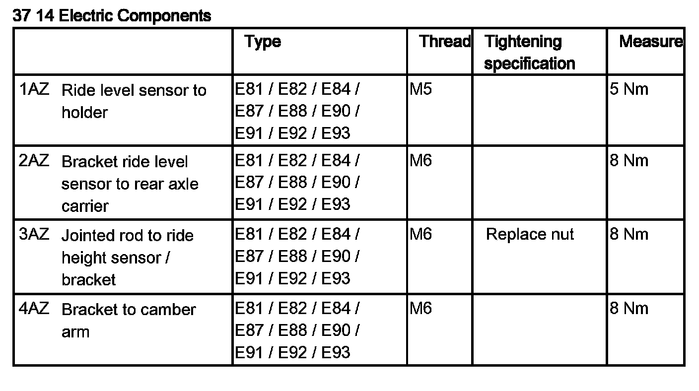
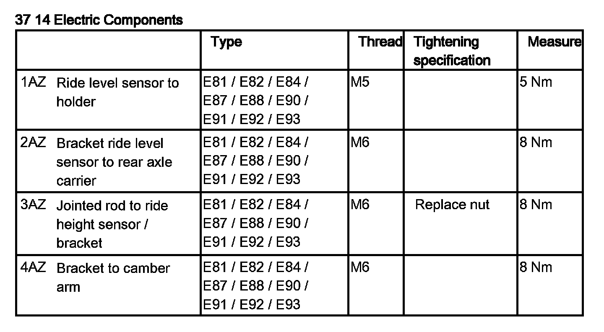
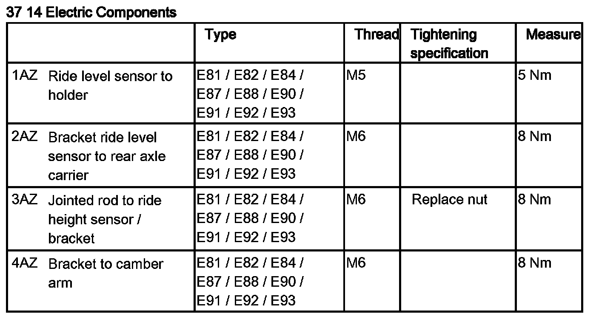
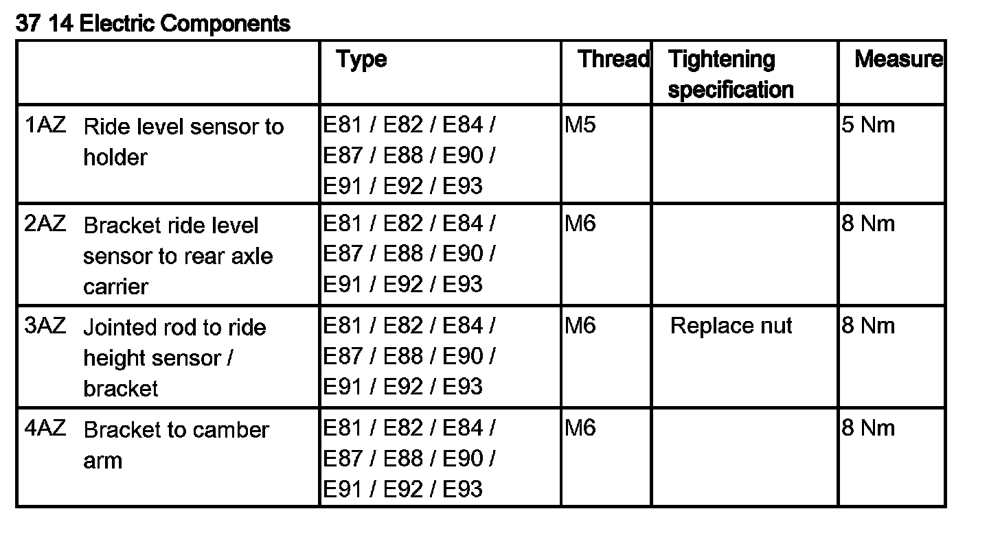
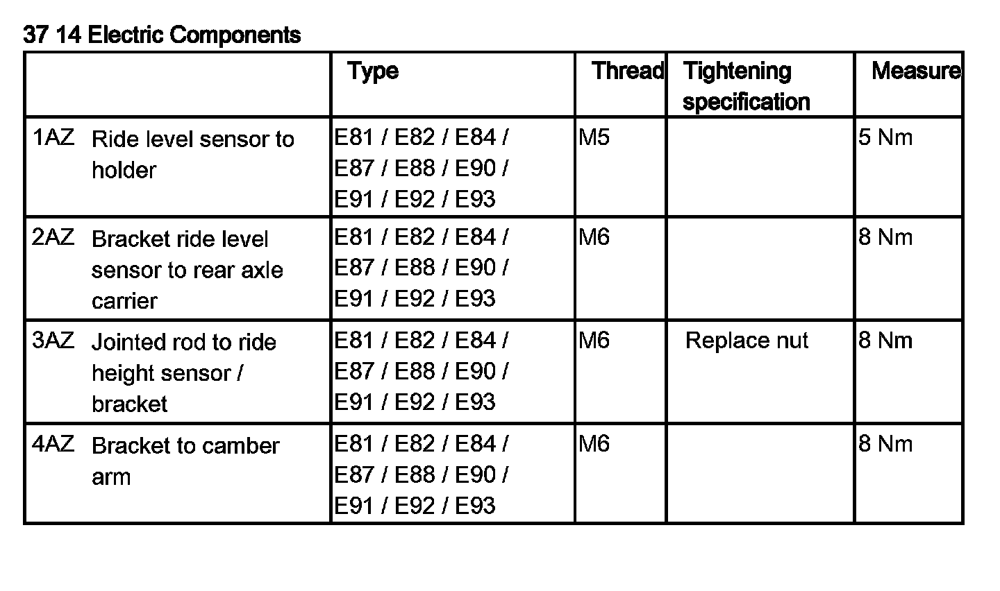
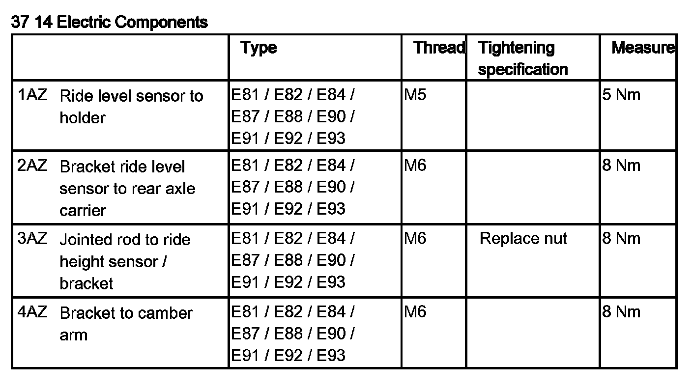

37 14 511 Replacing Front Ride-Height Sensor
37 14 511 Replacing Front Ride Height Sensor

IMPORTANT: Read and comply with notes on protection against electrostatic damage (ESD protection).

Release nut (1) and disconnect jointed rod (2).
Tightening torque 37 14 3AZ.
Installation note:
Replace nut.
Release screws (4).
Tightening torque 37 14 1AZ.
Remove ride height sensor and disconnect plug connection (3).
Installation note:
Sensor lever (5) must point from ride height sensor to left front wheel.

After installation:
- Check headlight adjustment, correct if necessary.





